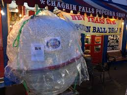
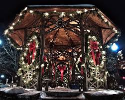
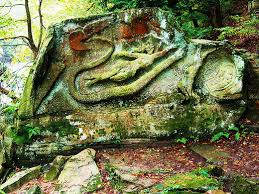
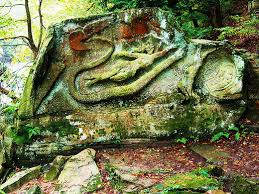
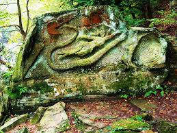

Chagrin Falls
Chagrin Falls is one of my favorite small towns near me. It is full of charm, nature, boutique stores and great food! Below are some of my favorite Chagrin attractions.
Chagrin Falls Blossom Time
Every year on memorial day weekend, Chagrin Falls hosts the Blossom Time festival. This festival is filled with carnival rides, games, and pop-up booths. Additionally, every year at Blossom Time there is a hot air balloon launch at the high school (pictured above). Blossom Time was one of my favorite weekends when I was younger.
Food in Chagrin

Chagrin Falls also has great food. Pictured above is the Chagrin Falls Popcorn Shop and Dave's Cosmic subs - both Chagrin Falls staples.
Chagrin Falls Nature Photo Gallery

 

